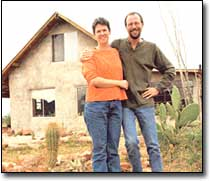
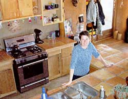
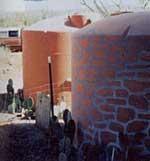
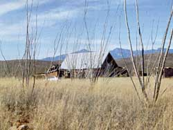

At our off-the-grid Arizona home, we conserve water to help protect this fragile ecosystem.
When we moved from rainy Portland, Ore., to Cochise County, Ariz., in 1999 to build a 1,200-square-foot solar, straw bale, completely off-the-grid house, we went one step further than most folks and decided it would be easier on the local environment if we didn't drill a well. We live in the Chihuahuan desert, an area that only gets an average 11 inches of rain per year (for the past few years the average has been closer to 7 inches!), so rather than depend on an already overtaxed aquifer for our household water needs, we decided to install a rainwater harvesting system. We conserve water carefully, but we live quite comfortably with this limited supply.
Protecting the natural beauty and rich wildlife habitat of the nearby San Pedro River, which is directly dependent on water from the aquifer, is our motivation for saving water. We live in the upper San Pedro River watershed, near one of the few cottonwood-willow riparian corridors in the Southwest. The river is familiar to many birders and scientists, and National Geographic featured an article on it in April 2000, written by the well-known author and Tucson, Ariz., resident Barbara Kingsolver. More than 300 species of birds visit this corridor during their seasonal migrations.
Sadly, the San Pedro is going the route of many other Arizona rivers: It may be in the early stages of drying up. Perhaps foretelling disaster, the growing number of people who reside in the upper San Pedro watershed use more than double the amount of water that is recharged into the aquifer each year. As the aquifer's level drops, increasingly larger portions of the river are disappearing, leaving dry gravel beds where Sonoran mud turtles and Gila topminnows once swam.
GOING OFF-THE-GRID
With money we saved while living in Oregon, we built our straw bale house, doing almost all of the construction ourselves, with some help from family and friends. We lived in a small camp trailer on the property for more than a year while building. During most of that period, we were able to take some time off from work; then as money ran low, we transitioned to part-time and then fulltime jobs. Right now, both of us work as counselors for the county health department.
Our house was built as cheaply as possible; we scavenged windows and doors, cabinets and tile by asking people who were remodeling their homes if we could have their used materials. Our completed home is both cozy and beautiful. Because we did not contract out any of the work (including the concrete foundations and floors!), we were able to build without a mortgage. Not having to make monthly payments on a house is liberating, but what provides even more satisfaction is knowing that we are actively making choices to minimize our impact on our very sensitive environment.
Our solar-powered home runs on a very simple photovoltaic (PV) system that we installed ourselves. The entire cost of the equipment - array, battery bank, charge controller and a 1,300-watt inverter (designed for motor homes) amounted to less than $3,000. We are able to run our television and VCR, stereo, microwave, toaster, vacuum, water pumps, fans for cooling and all our lighting, as well as our power tools. Our only inconvenience so far is incredibly minor: We cannot run the microwave and the toaster at the same time.
Our refrigerator and stove run on propane. We use 7-gallon propane bottles and refill them as needed at the local gas station, 15 miles away. We talk of having a 200-gallon tank installed and serviced by the local propane company, but the inconvenience of filling bottles hasn't yet pushed us to that expense. Most of the year, each 7-gallon bottle lasts four to five weeks, and we have two. During the winter, if we have to use the propane heater, a 7-gallon tank may last only 3Y weeks. But we rarely need to use the heater because the winters are relatively mild and our house has many passive-solar design features. Large south-facing windows combined with the thermal properties of our straw bale walls and sunlight-storing concrete floors keep us toasty warm; we only need to heat with propane when we get three cloudy days in a row during the winter, which rarely happens here.
COLLECTING RAINWATER
We put on the roof and began collecting water before we had even finished the walls. We have about 1,200 square feet of roof area, and even the most liberal estimates on water catchment ascribe only 960 gallons per inch of rain for a roof that size. Using the 11-inch rainfall average for our region, we figure we potentially could collect 10,560 gallons in an average year, which is only a small fraction of the nearly 150,000 gallons a typical North American household uses.
We have only 6,000 gallons of storage capacity, but since our region only receives rain during the summer and winter, we are able to fill the tanks in the summer, use some water in the fall, and then top the tanks off again in the winter. The toughest time is between February and July when the dry winds suck away every drop of moisture. Our stored 6,000 gallons has to last through this period.
We have a roof "washer" that we built ourselves, a device that diverts the first 5 gallons of water that come off the roof. This helps to keep the dust and any other materials that may be on the roof out of our water storage tanks. We also have a screened intake area to keep contaminants out of the water and a filtering system to further purify it.
The poly tanks used to store drinking water are expensive, running about $1,000 for a 3,000-gallon tank, so we started with just one and added the second tank later. At some point we could add a third, but so far we haven't found that we need that much water.
CAREFUL CONSERVATION
Even with low-flow toilets, you'd be surprised how much good, clean, drinking-quality water gets flushed each day in this country. Our first conservation measure was to install a composting toilet, which uses no water. Composting our waste also is good for the soil, as we use the mature compost around our trees. True, there is some maintenance involved in a composting toilet, but ours has required only minimal upkeep.
Any inconvenience to us pales in comparison to the inconvenience to the Sonoran mud turtles who are no longer able to migrate up and down the river. And to be perfectly honest with you, there is something satisfying about being responsible in this way for our own waste.
We also have perfected the art of showering. We had good training, because before we installed plumbing, we had to haul water by hand. During that time, we decided that the 5 gallons our solar shower could hold was more than sufficient for two bathings. Taking short showers has become ingrained, but just to keep us honest, we installed a low-flow showerhead with a stopping valve and a 6-gallon hot water heater. If you wish to take a long shower at our house, you have to be prepared to take it cold! Also, to not waste any more water than necessary, we often keep a bucket in the shower and dump the collected water on the garden.
To wash dishes, we fill the sink only a few inches. Rather than running water over the dishes to remove food particles, we first wipe the dishes down, separating out the food residues for composting. That keeps those few inches of water clean far longer, and we can wash a larger load with less water.
All our drains (except the wash side of the kitchen sink, which is by law required to go to the septic tank) go to trees we have planted, so the water gets reused immediately. We have a small, 12-by-4-foot kitchen garden, which we occasionally have to stop watering, but only during periods of extreme drought. Then, we have lost some plants, but not all. Our landscaping plants have fared particularly well because we specifically chose droughttolerant species - most of them native to the area - including palo verde trees, mesquites and desert willows. When we started rainwater harvesting, we were using rainwater for drinking and cooking, but more recently, we switched to store-bought water for drinking.
The reason was that our roofing material - uncoated galvanized metal - is no longer considered the safest material to collect drinking water because when it begins to corrode, the metal could introduce contaminants into our water supply. So we decided to be cautious with our drinking water; however, we still use harvested rainwater for most of our cooking.
The one luxury we have forgone thus far has been a washing machine; we take our laundry to a laundromat. Right now, this adds to our consumption of water from the aquifer, but we hope to soon buy a super-efficient machine for home. We should have enough water, given the average rainfall, but the droughts of recent years have left us unsure.
Last year was an especially dry year. We began the annual February-to-July drought with only 2,500 gallons in the tanks, and were down to only a few hundred gallons before the tanks began to refill during the rainy season.
But, we survived just fine with even that small amount of water, and our rationing was by no means unreasonable or uncomfortable. We still took daily showers and were able to give some water to the plants.
This tells us that with the return of normal rainfall patterns, we should be able to wash our laundry at home provided we buy a water-efficient washer. Some use as little as 18 gallons per load while most machines on the market use 40 to 50 gallons!
All in all, we have carved a satisfying life out of the harsh environment that is the Chihuahuan desert. We have created a lifestyle where we can live simply and cheaply without sacrificing comfort. This life is not for everyone, perhaps, but for us, it is the realization of a dream that we built slowly over the years. We hope those of you who share such dreams may be fortunate enough to realize them as we have.
|
 Valerie and John Titan, at left, in front of their home, which is in the upper watershed of the San Pedro River, shown at right |
 Valerie Titan shows off her completed kitchen. |
 Two storage tanks behind the couple's home hold a total of 6,000 gallons of water. |
|
 hat Arizona lacks in water it makes up for in sunshine and the beauty of its natural landscape. |
|
|